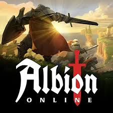

Albion Online es un MMORPG de fantasía medieval lanzado en 2017. Su mundo abierto permite a los jugadores recolectar recursos, fabricar objetos, comerciar, conquistar territorios y participar en combates tanto PvE como PvP. Con un sistema sin clases (“you are what you wear”), el equipamiento define las habilidades del avatar, y su economía está impulsada casi totalmente por los propios jugadores.
El juego fue desarrollado y publicado por Sandbox Interactive, un estudio independiente radicado en Berlín, Alemania. Con una visión de MMO sandbox auténtico, el equipo creó un sistema dinámico donde cada jugador puede definir completamente su rol y estilo de juego, ya sea artesano, comerciante, explorador o guerrero de asedio.
Albion Online sigue en evolución constante. En 2024-2025 se lanzaron importantes novedades: la expansión de servidores para Europa y Oriente Medio/Afr ca (MENA) con mejor latencia y nuevo punto de inicio para todos los jugadores; mejoras en la guerra territorial mediante fortificaciones, banners y cofres de actividad de gremios; y nuevos sistemas de logros, armas de cristal y contenido dinámico para revitalizar el combate grupal. Estas actualizaciones confirman el compromiso del estudio con mantener vivo el juego y adaptarlo a distintos estilos de jugadores.